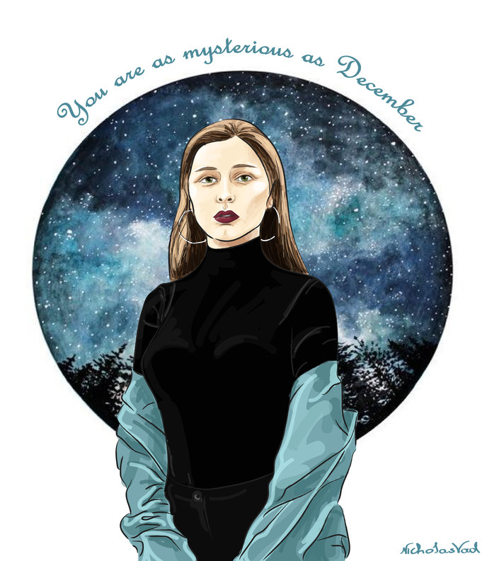

აჩუქე საიკო
მოგესალმებით მეგობრებო, კეთილი იყოს თქვენი თითი/მაუსი Saiko Art-ის გვერდზე, რომელიც დაგიმზადებთ ორიგინალურ ილუსტრაციებს საყვარელი ადამიანებისთვის. საიკო შექმნილია მათთვის ვისაც სურს რომ იყოს განსხვავებული და არაორდინალური. #აჩუქე საიკო. არ იფიქროთ ბევრი საჩუქრის შერჩევისას, მოგვწერეთ! შეგვითანხმეთ ილუსტრაციის სტილი, ბექგრაუნდი, ზომა და მაქსიმუმ 2 დღეში ველოსიპედიანი, სიმპატიური ბიჭუნა ( 3:) ) ადგილზე მოგართმევთ თქვენ კუთვნილ პორტრეტს. ჩარჩო თქვენზე იყოს. ;) ადგილზე მიტანა ხორციელდება მხოლოდ ქ.ხობის ტერიტორიაზე.

აჩუქე საიკო, გააბედნიერე საყვარელი ადამიანი. საიკო იაპონურად ნიშნავს საუკეთესოს. შეუკვეთე საუკეთესო, აჩუქე საუკეთესო.